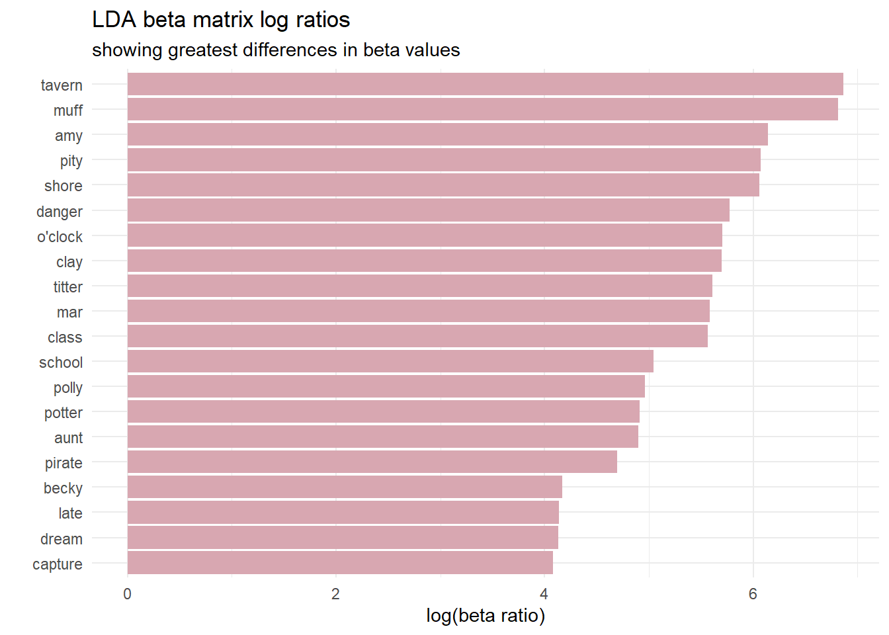
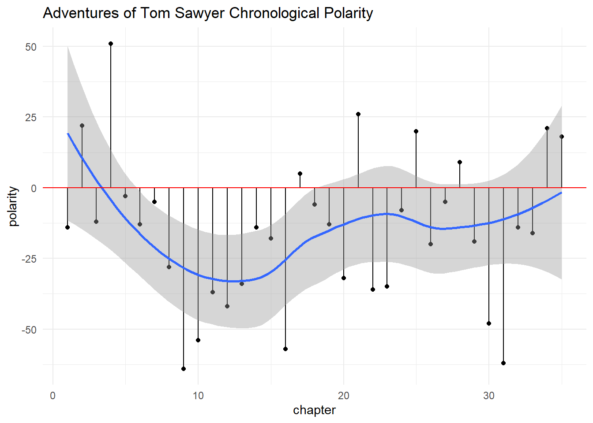
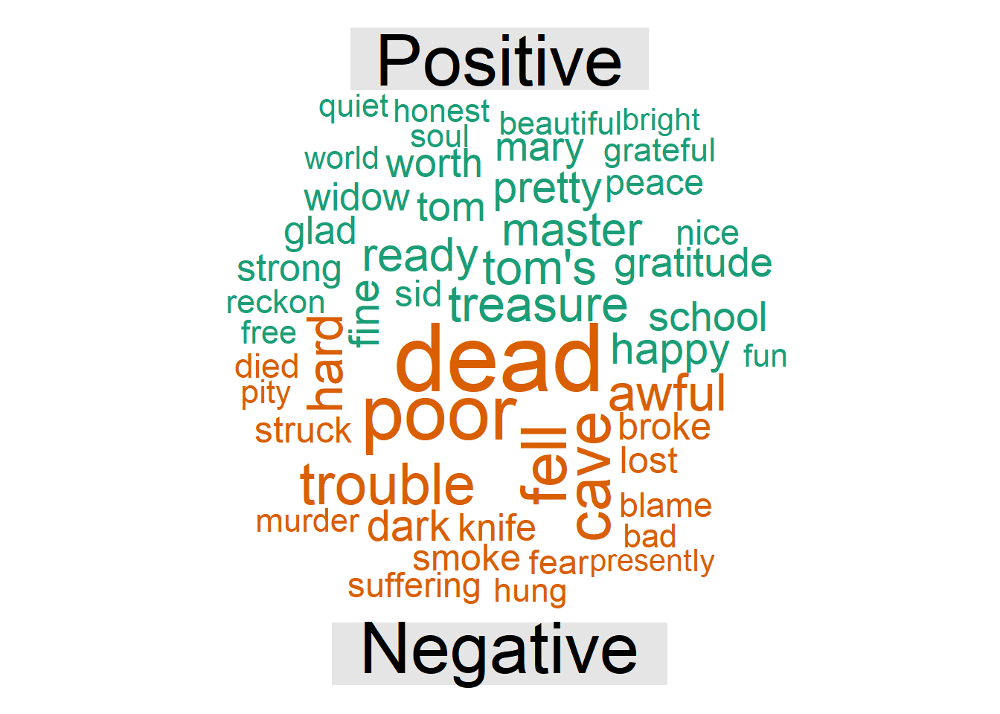

Chapter 2 Sentiment Analysis
Sentiment analysis is the extraction of the emotional intent of text. You can classify the polarity (positive | negative) or sentiment (angry | sad | happy | …) at the document, sentence, or feature level.
To practice with real-world data, I will use the Customer reviews of London-based hotels data set hosted on data.world. hotel_raw contains reviews of the top 10 most- and least-expensive hotels in London.
hotel_raw_1 <- read_csv("https://query.data.world/s/2zsbemxf66vevuuc47jqe24n4zwl54") %>%
mutate(`Date Of Review` = lubridate::mdy(`Date Of Review`),
`Property Name` = trimws(str_remove(`Property Name`, "Hotel")),
`Property Name` = trimws(str_remove(`Property Name`, "The")),
`Property Name` = case_when(
str_detect(`Property Name`, "^45 Park Lane") ~ "45 Park Lane",
str_detect(`Property Name`, "^Apex") ~ "Apex",
str_detect(`Property Name`, "^Bulgari") ~ "Bulgari",
str_detect(`Property Name`, "^Corinthia") ~ "Corinthia",
str_detect(`Property Name`, "^London Guest House") ~ "Guest House",
str_detect(`Property Name`, "^Xenia") ~ "Xenia",
str_detect(`Property Name`, "^Mandarin") ~ "Mandarin",
str_detect(`Property Name`, "^Mondrian") ~ "Mondrian",
str_detect(`Property Name`, "^Wellesley") ~ "Wellesley",
TRUE ~ `Property Name`),
`Property Name` = factor(`Property Name`),
review_id = row_number()
) %>%
janitor::clean_names(case = "snake") %>%
select(review_id, everything())
skimr::skim(hotel_raw_1)| Name | hotel_raw_1 |
| Number of rows | 27330 |
| Number of columns | 7 |
| _______________________ | |
| Column type frequency: | |
| character | 3 |
| Date | 1 |
| factor | 1 |
| numeric | 2 |
| ________________________ | |
| Group variables | None |
Variable type: character
| skim_variable | n_missing | complete_rate | min | max | empty | n_unique | whitespace |
|---|---|---|---|---|---|---|---|
| review_title | 0 | 1.00 | 1 | 508 | 0 | 22323 | 0 |
| review_text | 0 | 1.00 | 16 | 32759 | 0 | 27329 | 0 |
| location_of_the_reviewer | 3953 | 0.86 | 1 | 178 | 0 | 6624 | 0 |
Variable type: Date
| skim_variable | n_missing | complete_rate | min | max | median | n_unique |
|---|---|---|---|---|---|---|
| date_of_review | 1 | 1 | 2002-04-01 | 2018-10-18 | 2015-07-22 | 3870 |
Variable type: factor
| skim_variable | n_missing | complete_rate | ordered | n_unique | top_counts |
|---|---|---|---|---|---|
| property_name | 0 | 1 | FALSE | 20 | Sav: 5417, Mon: 4330, Rem: 3028, Cor: 2820 |
Variable type: numeric
| skim_variable | n_missing | complete_rate | mean | sd | p0 | p25 | p50 | p75 | p100 | hist |
|---|---|---|---|---|---|---|---|---|---|---|
| review_id | 0 | 1 | 13665.50 | 7889.64 | 1 | 6833.25 | 13665.5 | 20497.75 | 27330 | ▇▇▇▇▇ |
| review_rating | 0 | 1 | 4.49 | 0.89 | 1 | 4.00 | 5.0 | 5.00 | 5 | ▁▁▁▂▇ |
There are 27,330 reviews of 20 hotels posted between 2002-04-01 and 2018-10-18.
This raw text needs cleaned. One issue is tags like <e9> and unicode characters like <U+0440>. One way to get rid of unicode characters is to convert them to ascii tags with iconv() and then remove the tags with str_remove(). For example, iconv() will change <U+0093> to ascii string “<93>” that you can remove with regex "\\<[:alnum]+\\>]" (more help with regex on RStudio’s cheat sheets).
hotel_raw_2 <- hotel_raw_1 %>%
mutate(
review_text = iconv(review_text, from = "", to = "ASCII", sub = "byte"),
review_text = str_remove_all(review_text, "\\<[[:alnum:]]+\\>")
)I also want to remove reviews written in a foreign language. One blunt force way to handle this is to look for words common in other languages that do not also occur in English.
hotel <- hotel_raw_2 %>%
filter(!str_detect(review_text, "( das )|( der )|( und )|( en )")) %>% # German
filter(!str_detect(review_text, "( et )|( de )|( le )|( les )")) %>% # French
filter(!str_detect(review_text, "( di )|( e )|( la )")) %>% # Italian
filter(!str_detect(review_text, "( un )|( y )")) %>% # Spanish
select(review_id, everything())That got rid of 3,557 rows. My cleansed data set hotel has 23,773 rows.
2.1 Subjectivity Lexicons
There are three common sentiment lexicons. You commonly use Bing for polarity scoring, and AFINN for identifying emotions.
- Bing classifies words as positive or negative.
sentiment_bing <- get_sentiments("bing")
sentiment_bing %>% count(sentiment) %>%
adorn_totals() %>%
flextable() %>% autofit() %>% colformat_int(j = 2) %>% set_caption("Bing Lexicon")sentiment | n |
negative | 4,781 |
positive | 2,005 |
Total | 6,786 |
- The AFINN lexicon associates words with a manually rated valence integer between -5 (negative) and +5 (positive) by Finn Arup Nielsen.
sentiment_afinn <- get_sentiments("afinn")
sentiment_afinn %>% count(value) %>%
adorn_totals() %>%
flextable() %>% autofit() %>% colformat_int(j = 2) %>% set_caption("AFINN Lexicon")value | n |
-5 | 16 |
-4 | 43 |
-3 | 264 |
-2 | 966 |
-1 | 309 |
0 | 1 |
1 | 208 |
2 | 448 |
3 | 172 |
4 | 45 |
5 | 5 |
Total | 2,477 |
- The NRC lexicon associates words with eight emotions (anger, fear, anticipation, trust, surprise, sadness, joy, and disgust) corresponding to the second level of Plutchik’s Wheel of Emotions and two sentiments (negative and positive). NRC was created by manual annotation on a crowdsourcing platform. Read more here.
sentiment_nrc <- get_sentiments("nrc")
sentiment_nrc %>% count(sentiment) %>%
adorn_totals() %>%
flextable() %>% autofit() %>% colformat_int(j = 2) %>% set_caption("NRC Lexicon")sentiment | n |
anger | 1,247 |
anticipation | 839 |
disgust | 1,058 |
fear | 1,476 |
joy | 689 |
negative | 3,324 |
positive | 2,312 |
sadness | 1,191 |
surprise | 534 |
trust | 1,231 |
Total | 13,901 |
2.2 Polarity Scoring
You can use three packages to measure text polarity. The simplest method is using tidytext. You transform your text into one-row per word with unnest_tokens(), join to one of the sentiment lexicons, and add up the positives and negatives. The polarity score is the net of positive - negative. qdap is more sophisticated. It takes into account valence shifters, surrounding words that change the intensity of a sentiment (e.g., “very”) or switch its direction (e.g., “not”).
2.2.1 tidytext
The tidy way to score polarity is tagging individual words as “positive” and “negative” using the bing lexicon, then defining polarity as difference in counts. In principle, you ought to be able to use the positive|negative subset of NRC, or create weighted counts using AFINN. The qdap and sentimentr packages also correct for text length. A wordy review using twice as many positives as negatives shouldn’t score twice as positive. Those packages divide by \(\sqrt{n}\) to reduce the impact of word count (longer reviews are still more emotional, just less so).
Another “improvement” I employ below is capturing the words that registered as positive an negative. This is useful for explaining how the polarity score was calculated. I also attached the results back to the original data frame with an outer join since not all reviews would necessarily have any sentiment words (but they did). This leaves me with the original data, plus all my polarity metadata.
hotel_tidy <- hotel %>%
select(review_id, review_text) %>%
unnest_tokens(output = "word", input = review_text)
hotel_wordcount <- hotel_tidy %>%
count(review_id)
hotel_tidy_polarity_1 <- hotel_tidy %>%
inner_join(get_sentiments("bing"), by = "word") %>%
group_by(review_id, sentiment) %>%
summarize(.groups = "drop",
n = n(),
words = list(word)) %>%
pivot_wider(names_from = sentiment, values_from = c(n, words), values_fill = list(n = 0))
hotel_tidy_polarity_bing <- hotel %>%
left_join(hotel_wordcount, by = "review_id") %>%
left_join(hotel_tidy_polarity_1, by = "review_id") %>%
mutate(polarity_score = (n_positive - n_negative) / sqrt(n),
polarity_desc = if_else(polarity_score >= 0, "Positive", "Negative"))Out of curiosity, I’ll try this with AFINN too.
hotel_tidy_polarity_2 <- hotel_tidy %>%
inner_join(get_sentiments("afinn"), by = "word") %>%
group_by(review_id) %>%
summarize(.groups = "drop",
sentiment = sum(value),
words = list(word))
hotel_tidy_polarity_afinn <- hotel %>%
left_join(hotel_wordcount, by = "review_id") %>%
left_join(hotel_tidy_polarity_2, by = "review_id") %>%
mutate(polarity_score = sentiment / sqrt(n),
polarity_desc = if_else(polarity_score >= 0, "Positive", "Negative"))How should we present these results? One way is to treat polarity as the numeric measure and group by the factor variable property_name. Here are my Bing results.
hotel_tidy_polarity_bing %>%
group_by(property_name) %>%
mutate(median_polarity = median(polarity_score, na.rm = TRUE)) %>%
ungroup() %>%
arrange(median_polarity) %>%
ggplot(aes(x = fct_inorder(property_name), y = polarity_score)) +
geom_jitter(width = 0.2, alpha = 0.3, color = "#5DA5DA", size = 1) +
geom_boxplot(alpha = 0) +
geom_hline(yintercept = 0, linetype = "longdash", color = "#60BD68", size = 1.25) +
coord_flip() +
theme_minimal() +
labs(title = "Few Reviews for a Reason?",
subtitle = "Hotels with few reviews tend to have negative reviews.",
x = NULL, y = "Sentiment Polarity Score",
caption = "Bing Polarity = (n_pos - n_neg) / sqrt(n_words)")
And here is is with AFINN.
hotel_tidy_polarity_afinn %>%
group_by(property_name) %>%
mutate(median_polarity = median(polarity_score, na.rm = TRUE)) %>%
ungroup() %>%
arrange(median_polarity) %>%
ggplot(aes(x = fct_inorder(property_name), y = polarity_score)) +
geom_jitter(width = 0.2, alpha = 0.3, color = "#5DA5DA", size = 1) +
geom_boxplot(alpha = 0) +
geom_hline(yintercept = 0, linetype = "longdash", color = "#60BD68", size = 1.25) +
coord_flip() +
theme_minimal() +
labs(title = "Few Reviews for a Reason?",
subtitle = "Hotels with few reviews tend to have negative reviews.",
x = NULL, y = "Sentiment Polarity Score",
caption = "AFINN Polarity = sentiment / sqrt(n_words)")
Not too different. 2 of the top 3 are the same. The bottom 4 are the same group, just shuffled. Savoy fared better in AFINN than in Bing.
The data set includes a numeric rating review_rating (1-5). Does the polarity score reveal anything that the numeric rating doesn’t already tell you?
hotel_tidy_polarity_bing %>%
filter(!is.na(polarity_score)) %>%
ggplot(aes(x = as_factor(review_rating), y = polarity_score)) +
geom_jitter(width = 0.2, alpha = 0.3, color = "#5DA5DA", size = 1) +
geom_boxplot(alpha = 0) +
theme_minimal() +
labs(title = "Few Reviews for a Reason?",
subtitle = "Hotels with few reviews tend to have negative reviews.",
x = NULL, y = "Sentiment Polarity Score",
caption = "Polarity = (n_pos - n_neg) / sqrt(n_words)")
Most reviews are positive - even for 2-rated hotels. While sentiment does increase with review rating, there are plenty of reviews with a rating of 5 and a polarity score <0. Let’s dig into that a little.
Here is a 1-rated review with a decent polarity score.
hotel_tidy_polarity_bing %>%
filter(review_rating == 1) %>%
slice_max(polarity_score) %>%
select(polarity_score, review_text) %>%
flextable() %>% autofit()polarity_score | review_text |
0.8728716 | Stayed here many times both for business and pleasure, alone, with my wife and even with extended family and children. It is in fact impossible to seperate the business and pleasure stays because everytime was a breathtakingly delectable pleasure. Meeting friends and colleagues whether in the lobby one of the resturants always left an impressive memorable impression. Alas, I haven't been able to visit again for sometime - either fully booked or are not able to guarantee convenient parking for my personal chauffeur and car. |
Well, that is amusing - I the reviewer treating the rating as a kind of ranking (first place!). How about a 5-rating with negative sentiment?
hotel_tidy_polarity_bing %>%
filter(review_rating == 5) %>%
slice_min(polarity_score) %>%
select(polarity_score, review_text) %>%
flextable() %>% autofit()polarity_score | review_text |
-0.70014 | Some design faults in the bathroom - no stool, misplaced grab handles and vanity mirror. | Very disappointing experience in Savoy Grill. Good quality ingredients but poorly presented and tasteless. Numerous mistakes in service including charging for expensive drinks which we did not have. Service charge revoked and booking for following night cancelled. | |
Again, I think they got it backwards.
The polarity scoring can reveal why some hotels rated worse by looking at the words used. (this plot di not come out well).
hotel_tidy_polarity_bing %>%
mutate(review_rating = as.factor(review_rating)) %>%
filter(!is.na(polarity_desc)) %>%
select(!c(words_positive, words_negative)) %>% # no lists allowed
unnest_tokens("word", review_text) %>%
anti_join(stop_words, by = "word") %>%
filter(!str_detect(word, "[0-9]")) %>%
filter(!word %in% c("hotel", "stay", "night", "london")) %>%
count(review_rating, polarity_desc, word) %>%
group_by(review_rating, polarity_desc) %>%
slice_max(order_by = n, n = 8, with_ties = FALSE) %>%
mutate(n = if_else(polarity_desc == "Negative", -n, n),
word = paste0(if_else(polarity_desc == "Negative", "-", "+"), word)) %>%
ungroup() %>%
arrange(review_rating, n) %>%
ggplot(aes(x = fct_inorder(word), y = n, fill = polarity_desc, color = polarity_desc)) +
geom_col(alpha = 0.6) +
facet_wrap(~as.factor(review_rating), scales = "free") +
scale_fill_few() +
scale_color_few() +
coord_flip() +
theme_minimal() +
theme(legend.position = "top") +
labs(title = "Top Words by review type", y = "Word Count", x = NULL,
fill = NULL, color = NULL)
Word clouds are a nice way to get an overview of the data.
hotel_tidy_polarity_bing %>%
unnest_tokens(output = "word", input = review_text) %>%
anti_join(stop_words, by = "word") %>%
filter(!str_detect(word, "[0-9]") & !is.na(polarity_desc)) %>%
filter(!word %in% c("hotel", "stay", "night", "london")) %>%
count(word, polarity_desc, wt = n) %>%
pivot_wider(names_from = polarity_desc, values_from = n, values_fill = 0) %>%
data.table::data.table() %>%
as.matrix(rownames = "word") %>%
wordcloud::comparison.cloud(max.words = 20, title.size = 1.5)## Warning in wordcloud::comparison.cloud(., max.words = 20, title.size = 1.5):
## breakfast could not be fit on page. It will not be plotted.## Warning in wordcloud::comparison.cloud(., max.words = 20, title.size = 1.5):
## restaurant could not be fit on page. It will not be plotted.## Warning in wordcloud::comparison.cloud(., max.words = 20, title.size = 1.5):
## special could not be fit on page. It will not be plotted.
2.2.2 sentimentr
sentimentr calculates polarity at the sentence level. It improves on tidytext in that it takes into account the context in which the sentiment words occur, that is, the valence shifters.
- A negator flips the sign of a polarized word (e.g., “I do not like it.”). See
lexicon::hash_valence_shifters[y==1]. - An amplifier (intensifier) increases the impact (e.g., “I really like it.”). See
lexicon::hash_valence_shifters[y==2]. - A de-amplifier (downtoner) reduces the impact (e.g., “I hardly like it.”). See
lexicon::hash_valence_shifters[y==3]. - An adversative conjunction overrules the previous clause containing a polarized word (e.g., “I like it but it’s not worth it.”). See
lexicon::hash_valence_shifters[y==4].
sentimentr uses a lexicon package combined from the syuzhet and lexicon packages. Positive words are scored +1 and negative words are scored -1. sentimentr identifies clusters of words within sentences of the text. The 4 words before and 2 words after are candidate valence shifters. Polarized words are weighted by the valence shifter weights: negators = -1; amplifiers and de-amplifiers = 1.8; adversative conjunctions decrease the value of the prior cluster and increase the value of the following cluster. Neutral words hold no value, but do affect the word count.
hotel_sentr_polarity_1 <- hotel %>%
mutate(sentences = get_sentences(review_text)) %$%
sentiment_by(sentences, review_id)
hotel_sentr_polarity <- hotel %>%
left_join(hotel_sentr_polarity_1, by = "review_id") %>%
mutate(polarity_desc = if_else(ave_sentiment >= 0, "Positive", "Negative"))Here is the chart treating polarity as the numeric measure and group by the factor variable property_name.
hotel_sentr_polarity %>%
group_by(property_name) %>%
mutate(median_polarity = median(ave_sentiment, na.rm = TRUE)) %>%
ungroup() %>%
arrange(median_polarity) %>%
ggplot(aes(x = fct_inorder(property_name), y = ave_sentiment)) +
geom_jitter(width = 0.2, alpha = 0.3, color = "#5DA5DA", size = 1) +
geom_boxplot(alpha = 0) +
geom_hline(yintercept = 0, linetype = "longdash", color = "#60BD68", size = 1.25) +
coord_flip() +
theme_minimal() +
labs(title = "Few Reviews for a Reason?",
subtitle = "Hotels with few reviews tend to have negative reviews.",
x = NULL, y = "Sentiment Polarity Score",
caption = "Sentimentr Polarity")
Here, Xenia came out on top.
The data set includes a numeric rating review_rating (1-5). Does the polarity score reveal anything that the numeric rating doesn’t already tell you?
hotel_sentr_polarity %>%
filter(!is.na(ave_sentiment)) %>%
ggplot(aes(x = as_factor(review_rating), y = ave_sentiment)) +
geom_jitter(width = 0.2, alpha = 0.3, color = "#5DA5DA", size = 1) +
geom_boxplot(alpha = 0) +
theme_minimal() +
labs(title = "Few Reviews for a Reason?",
subtitle = "Hotels with few reviews tend to have negative reviews.",
x = NULL, y = "Sentiment Polarity Score",
caption = "Polarity = (n_pos - n_neg) / sqrt(n_words)")
One nice feature of sentimentr is that it creates a highlighted text based on sentiment score (green = positive, red = negative).
2.2.3 qdap
qdap::polarity(text.var, grouping.var = NULL) calculates the polarity score for each character string text.var, grouping by optional character vector grouping.var. polarity uses the sentiment dictionary to tag polarized words. It considers a context cluster of words around polarized words as valence shifters (neutral, negator, amplifier, or de-amplifier). Neutral words hold no value but do affect word count. polarity applies the dictionary weights to each polarized word and then further weights by the number and position of the valence shifters. Last, it sums the context cluster and divides by the square root of the word count, yielding an unbounded polarity score.
# hotel_sentr_polarity <- hotel %>%
# mutate(sentences = get_sentences(review_text)) %>%
# sentiment_by(sentences, list(review_id))
# hotel_qdap_polarity <- hotel %$%
# polarity(review_text, review_id)
#
# scores(hotel_qdap_polarity)The counts() function returns one row for each line of text. It includes a list of the positive and negative words that contribute to the polarity score. Line 57 has a polarity score of zero because it has a pair of positive and negative words.
# sawyer[57,]
# counts(sawyer_tm_polarity)[57,]
# counts(sawyer_tm_polarity)[57, c("pos.words", "neg.words")] %>% unlist()Oh, but wait - Twain doesn’t use mighty as a positive adjective, but rather, as an amplifier adverb. Mighty appears sawyer %>% filter(str_detect(text, "mighty")) %>% nrow times in Tom Sawyer. We should remove it from the polarity.frame and add it to the amplifiers.
# custom_frame <- sentiment_frame(
# positives = qdapDictionaries::positive.words[qdapDictionaries::positive.words != "mighty"],
# negatives = qdapDictionaries::negative.words
# )
#
# sawyer_tm_polarity_2 <- sawyer %>%
# mutate(text = str_remove_all(text, "\\_")) %$%
# polarity(
# text, chapter,
# polarity.frame = custom_frame,
# amplifiers = sort(c(qdapDictionaries::amplification.words, "mighty"))
# )
#
# counts(sawyer_tm_polarity_2)[57,] Something is still wrong here. It removed mighty as a positive word, but did not apply it as amplifier. It seems to be confused by the presence of the comma in “tomorrow, to punish”. I’ll drop the matter for now, but perhaps how we parse the data into rows makes a difference. It also advises that you run SentSplit() on the data first, but the function never stopped running, so I abandoned it.
Here is a plot of the polarity results.
Chapter 22 had the lowest polarity score and chapter 34 the highest.
# sawyer_tm_polarity_2 %>%
# scores() %>%
# mutate(chapter = as.integer(chapter)) %>%
# ggplot(aes(x = chapter, y = ave.polarity)) +
# geom_point() +
# geom_segment(aes(x = chapter, xend = chapter, y = 0, yend = ave.polarity)) +
# geom_smooth() +
# geom_hline(yintercept = 0, color = "red") +
# theme_minimal() +
# labs(title = "Adventures of Tom Sawyer Chronological Polarity")Create to strings, one with the positive chapters, and one from the negative chapters.
# sawyer_poloarity_pos <- sawyer_tm_polarity_2$all %>%
# filter(polarity > 0) %>%
# pull(text.var) %>%
# paste(collapse = " ")
#
# sawyer_poloarity_neg <- sawyer_tm_polarity_2$all %>%
# filter(polarity < 0) %>%
# pull(text.var) %>%
# paste(collapse = " ")
#
# sawyer_polarity_tdm <- c(sawyer_poloarity_pos, sawyer_poloarity_neg) %>%
# VectorSource() %>%
# VCorpus() %>%
# TermDocumentMatrix(control = list(weighting = weightTfIdf,
# removePunctuation = TRUE,
# stopwords = stopwords(kind = "en")))Often authors will use more words when they are more passionate. Lengthy reviews may inflate overall sentiment since the reviews will inherently contain more positive or negative language as the review lengthens.
2.3 Emotion Classification
Bar plots are usually a clearer alternative, but radar charts do look pretty.
https://en.wikipedia.org/wiki/Robert_Plutchik#/media/File:Plutchik-wheel.svg
{kind=link}
# dat <- sawyer_tidy %>%
# inner_join(get_sentiments("nrc"), by = "word") %>%
# filter(!sentiment %in% c("positive", "negative")) %>%
# mutate(sentiment = case_when(sentiment == "joy" ~ 1,
# sentiment == "trust" ~ 2,
# sentiment == "fear" ~ 3,
# sentiment == "surprise" ~ 4,
# sentiment == "sadness" ~ 5,
# sentiment == "disgust" ~ 6,
# sentiment == "anger" ~ 7,
# sentiment == "anticipation" ~ 8,
# TRUE ~ 9),
# sentiment = factor(sentiment, levels = c(1:9),
# labels = c("joy", "trust", "fear", "surprise",
# "sadness", "disgust", "anger",
# "anticipation", "other"))) %>%
# count(sentiment)
#
# dat %>%
# radarchart::chartJSRadar()# library(gutenbergr)
# sawyer_raw <- gutenberg_works(title == "The Adventures of Tom Sawyer") %>%
# gutenberg_download()
# hotel %>% filter(is.na(date_of_review))
# min(hotel$date_of_review, na.rm = TRUE)
# skimr::skim(sawyer_raw)sawyer_raw is a tibble with 8,832 rows, with one row per line of text and 0-78 characters per line. This is a corpus with a single document and no metadata (although you could get multiple books at once, and attach the title and author as metadata).
Most text requires some cleaning. I will want to remove the title lines, and add add some metadata, including the chapter number and line number.
# sawyer <- sawyer_raw %>%
# tail(-455) %>% # chapter 1 starts on line 456
# mutate(
# is_chap = str_detect(text, regex("^chapter [\\divxlc]", ignore_case = TRUE)),
# chapter = cumsum(is_chap)
# ) %>%
# filter(text != "" & !str_detect(text, regex("^chapter [\\divxlc]", ignore_case = TRUE))) %>%
# mutate(line = row_number()) %>%
# select(line, chapter, text)
# head(sawyer)A subjectivity lexicon is a predefined list of words associated with emotional context such as positive/negative. qdap::polarity() uses the lexicon::hash_sentiment_huliu lexicon with sentiment values in (+1, 0, -1.05, -1, -2). It is similar to tidytext::sentiments() AFINN lexicon (-5 to 5). tidytext::sentiments() also includes the NRC lexicon (classifying among 8 emotions) and the Bing lexicon (classifying as positive or negative).
Subjectivity lexicons are typically short (a few thousand words), but work because of Zipf’s law. According to this law, the nth-ranked item in a frequency table has a frequency count equal to 1/n of the top-ranked item. So infrequently used words are used very infrequently.
2.4 Comparison Cloud
# sawyer_tidy %>%
# anti_join(stop_words, by = "word") %>%
# filter(!str_detect(word, "[0-9]")) %>%
# inner_join(get_sentiments("nrc"), by = "word") %>%
# filter(sentiment %in% c("positive", "negative")) %>%
# count(chapter, sentiment) %>%
# group_by(chapter) %>%
# mutate(pct = n / sum(n)) %>%
# ggplot(aes(x = chapter, y = pct, fill = sentiment, color = sentiment)) +
# geom_area(alpha = 0.6) +
# scale_x_continuous(breaks = 1:35, minor_breaks = NULL) +
# scale_fill_few() +
# scale_color_few() +
# geom_hline(yintercept = 0.5, linetype = 2) +
# theme_minimal() +
# theme(legend.position = "top") +
# labs(title = "Sentiment Proportion by Chapter", x = NULL, y = NULL, fill = NULL, color = NULL)# sawyer_tidy %>%
# anti_join(stop_words, by = "word") %>%
# filter(!str_detect(word, "[0-9]")) %>%
# inner_join(get_sentiments("afinn"), by = "word") %>%
# ggplot(aes(x = value)) +
# geom_density(fill = ggthemes::few_pal()(1), alpha = 0.6) +
# theme_minimal() +
# labs(title = "AFINN Score Density")# sawyer_tidy %>%
# inner_join(get_sentiments("bing"), by = "word") %>%
# count(chapter, line, sentiment) %>%
# pivot_wider(names_from = sentiment, values_from = n, values_fill = 0) %>%
# mutate(polarity = positive - negative) %>%
# ggplot(aes(x = as.factor(chapter), y = polarity)) +
# geom_boxplot() +
# geom_jitter(aes(color = as.factor(chapter)), alpha = 0.6, size = .5, show.legend = FALSE) +
# theme_minimal() +
# labs(title = "Chapter Polarity")# sawyer_tidy %>%
# inner_join(get_sentiments("afinn"), by = "word") %>%
# count(chapter, value) %>%
# ggplot(aes(area = n, fill = value)) +
# treemapify::geom_treemap()One more cleaning step. Since these reviews are recorded in web sites, they are likely rife with spelling errors. I’ll use the misspellings dataset from the fuzzyjoin package to remove them.
# data("misspellings", package = "fuzzyjoin")
#
# # Some misspelling have multiple correct possibilities - choose one
# misspellings_winner <- misspellings %>%
# group_by(misspelling) %>%
# slice(n = 1)
#
# hotel <- hotel_raw_3 %>%
# unnest_tokens("word", review_text) %>%
# left_join(misspellings, by = c("word" = "misspelling")) %>%
# word = coalesce(correct, word)
# hotel_raw_2 %>% filter(review_id %in% c(28)) %>%
# select(review_text) %>%
# flextable::flextable()2.5 Statistical Test
Since this is a comparison of a numeric outcome to a multinominal predictor (property_name) or ordinal predictor(review_rating), you could perform an ANOVA test.